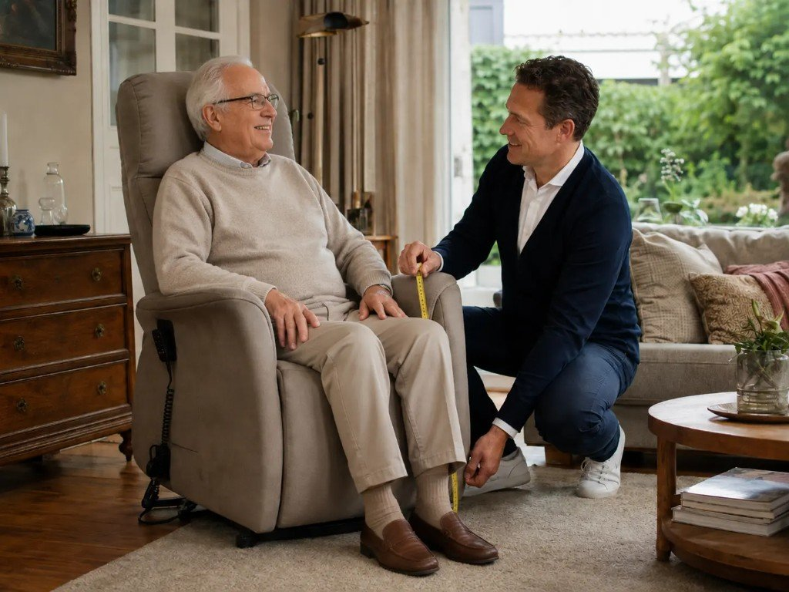

Gezocht: senioren die deze sta-op-stoel gratis thuis willen uitproberen om weer veilig en zelfstandig op te staan

U kent het gevoel.
U zit lekker in uw stoel… en dan wilt u opstaan.
En dan begint het.
U houdt zich vast aan de leuning, zet even extra kracht en hoopt dat het lukt.
Veel senioren herkennen dit.
Niet omdat ze “oud” zijn — maar omdat hun stoel nooit is gemaakt voor veilig, zelfstandig opstaan op latere leeftijd.
Een diepe zitting. Te weinig steun. Geen hulp bij het omhoog komen. Dat is geen klein ongemak.
Dat is spanning. Elke dag opnieuw.
En die spanning hoeft niet zo te blijven.
Met een sta-op-stoel op maat kunt u weer zelfstandig opstaan — zonder hulp, zonder forceren. Gemeten op 7 persoonlijke meetpunten, zodat de stoel precies bij ú past.
Daarom zoeken wij nu senioren die deze stoel gratis thuis willen uitproberen.

Controleer GRATIS of u in aanmerking komt om deze stoel thuis uit te proberen.
Ik wil weer zelfstandig opstaanSelecteer uw test-stoel
Klik op een stoel om de test te starten:
100% gratis & vrijblijvend
Ontdek of u in aanmerking komt voor een gratis proefzit
Stap 1: Klik op uw provincie hieronder of op de kaart.
Stap 2: Beantwoord 4 korte vragen en ontvang vrijblijvend advies.
Selecteer uw provincie
Klik op uw provincie om te zien of u in aanmerking komt:
Hoe werkt het?
U wilt weer zelfstandig opstaan — zonder druk of verplichting. Daarom komt een adviseur bij u thuis met de stoel.
Eerst controleren we of u in aanmerking komt. Daarna plant u een gratis proefzit. U zit nergens aan vast.
Wacht niet tot opstaan nóg zwaarder wordt. Controleer vandaag nog of u meedoet.
Hoe meldt u zich aan?
Stap 1: Klik op uw provincie op de kaart of via de knoppen hierboven.
Stap 2: Beantwoord 4 korte vragen — daarna controleren we of u in aanmerking komt.